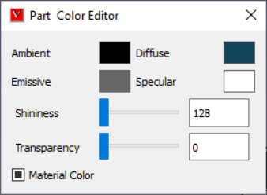

Material¶
This command helps user to edit appearance properties of a part.
User can modify the following properties
Ambient,
Diffuse,
Emissive,
Specular,
Shininess and
Transparency.
All property values vary in the range of 0 to 1.
Part Material Color Panel

Ambient |
Specifies the amount of light a surface should reflect. |
Diffuse |
Specifies the amount of light, the surface reflects. It depends on the angle of surface with the source light. |
Emissive |
Specifies the amount of light produced by a glowing object. |
Specular |
Specifies the color of an objects highlight. |
Shininess |
Specifies the degree of the surface shine. Value ‘0’ refers a rough surface and ‘1’ refers most polished surface. |
Transparency |
Specifies the transparency of the object. Value ‘0’ refers ‘No Transparency’ and ‘1’ refers to ‘Full Transparency’. |
Material |
Check this material color box to apply default material color on the selected parts. |
How to apply or remove material color?
Double click on a part of a model.
It pops up a context menu
Click ‘Display Mode | Color Plot’.
It applies or removes material color.
{kind=link}
How to change part material color?
Load a CAx model.
Select a part by double clicking on a part, which highlights the part with its bounding box.
Check Material color checkbox to apply material color.
Change the Ambient color using slider controls and notice the change in part concurrently.
Change the Diffuse color.
Change the Emissive color.
Change the Specular color.
Change the Shininess.
The changes will effect in the viewer immediately.
{kind=link}